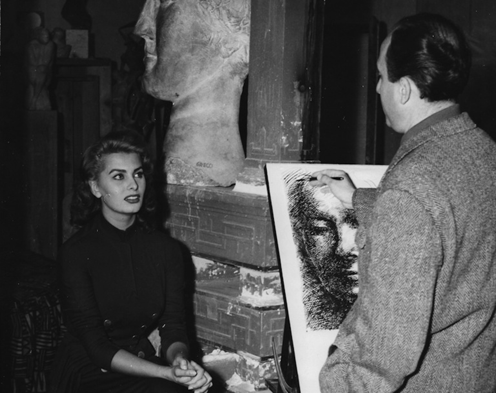

L’artista si racconta
"Sono nato a Catania in una casa posta sotto il livello stradale [...] Ricordo i cartelloni violenti di sfide famose, dipinti in blu intensi e gialli oro che davano splendore alle corazze dei paladini: quei cari pupi io spesso li disegnavo sul lastricato del mio cortile.”
Emilio Greco nacque a Catania l'11 ottobre 1913 in una famiglia modesta e numerosa. Sin da bambino manifestò spiccata propensione al disegno, influenzato dall'ambiente circostante di eredità Greco-Romana e tardo-Barocca. Il suo primo incontro con la scultura avvenne a 13 anni, quando dovette lasciare la scuola e lavorare, a causa di una grave malattia del padre, presso una bottega di ornamenti funebri per contribuire al mantenimento della famiglia.
La sua prima personale di grafica si tenne a Palermo nel 1933, nella stessa città in cui più tardi sostenne con profitto l'esame di ammissione all'Accademia di Belle Arti. Solo dopo la II Guerra Mondiale, durante la quale prestò servizio militare a Roma come disegnatore presso una fabbrica di materiale d'artiglieria, Emilio Greco ottenne diversi riconoscimenti nazionali e internazionali: ha esposto al MOMA di New York, vendette un bronzo alla Tate Gallery di Londra.
Nel 1953 vinse il concorso per la realizzazione del monumento di Pinocchio, a Collodi. Nel 1955 ottenne la Cattedra di Scultura all'Accademia di Belle Arti di Napoli. Nel 1956 gli fu assegnato il Gran Premio per la Scultura alla XXVIII Biennale di Venezia. Nel 1967 realizzò il monumento in memoria di Papa Giovanni XXIII, a San Pietro, a Roma. Nel 1970 ultimò le porte del Duomo di Orvieto. L'artista catanese visse e lavorò prevalentemente a Roma dove si spense il 5 Aprile 1995.
Nel 1956 gli fu assegnato il Gran Premio per la Scultura alla XXVIII Biennale di Venezia. Nel 1967 realizzò il monumento in memoria di Papa Giovanni XXIII, a San Pietro. Nel 1970 ultimò le porte del Duomo di Orvieto. Mostre permanenti di Emilio Greco: il Museo dell'Ermitage di S.Pietroburgo, il Museo Puschkin di Mosca, il Greco Garden nel Museo all'Aria Aperta di Hakone in Giappone, la Tate Gallery di Londra, i Musei Vaticani, la Galleria degli Uffizi di Firenze, il Museo Emilio Greco di Orvieto.